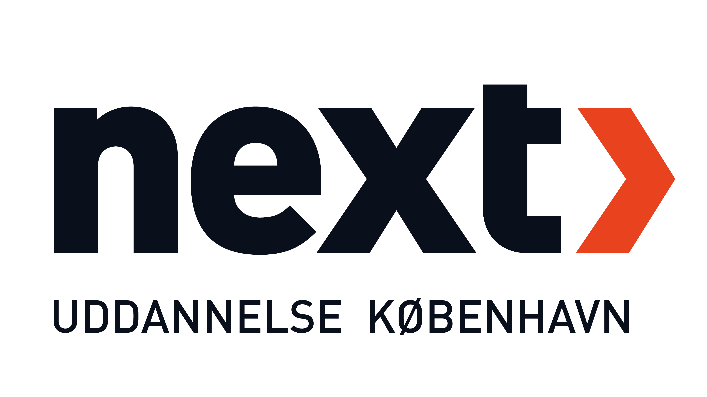
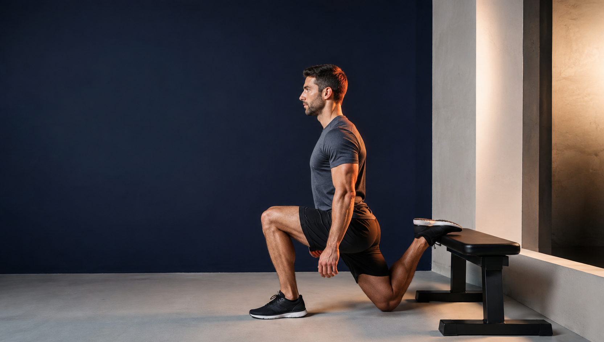

Marketingmix
De fire P’er, prisfastsættelse, kvalitet og sortiment.


Quiz Fitness · Afsætning D · Eksamensquiz
50 pensumbaserede spørgsmål om SATS, PureGym, markedsføring, kunder og forretningsmodeller. Fire svarmuligheder. Ét korrekt svar og en forklaring med det samme.
Udviklet til elever på NEXTs fitnessuddannelse
01 Læringsmål
Spørgsmålene tager udgangspunkt i dokumentationsopgaven om SATS og PureGym samt de afsætningsbegreber, der er brugt i opgaven. Hvert svar får en faglig forklaring og sidehenvisning.
De fire P’er, prisfastsættelse, kvalitet og sortiment.
SWOT, konkurrence, segmentering, behov og købeadfærd.
Førstehåndsindtryk, behovsafdækning, kropssprog og betjening.
Forretningsmodeller, SMART, de fire rette og forbrugerregler.
02 Quizflow
01 Marketingmix
Vælg en svarmulighed for at fortsætte.
Resultat Din evaluering
01 Faglig profil
02 Facit